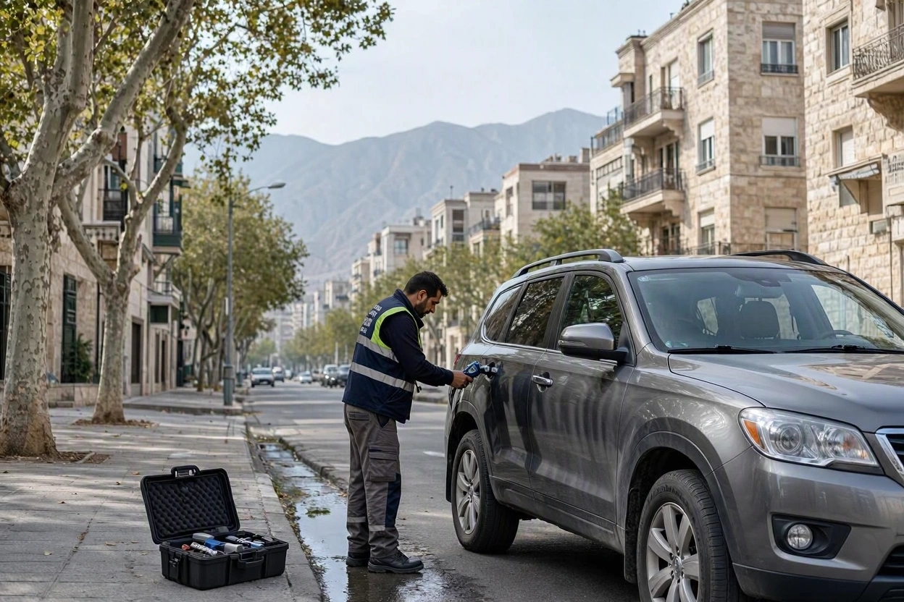
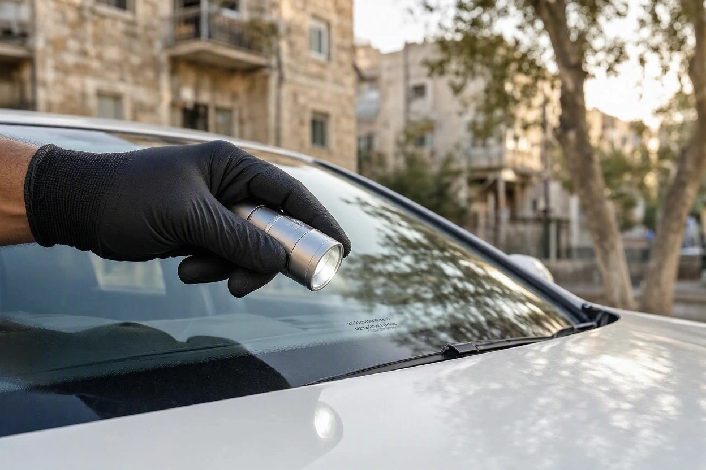
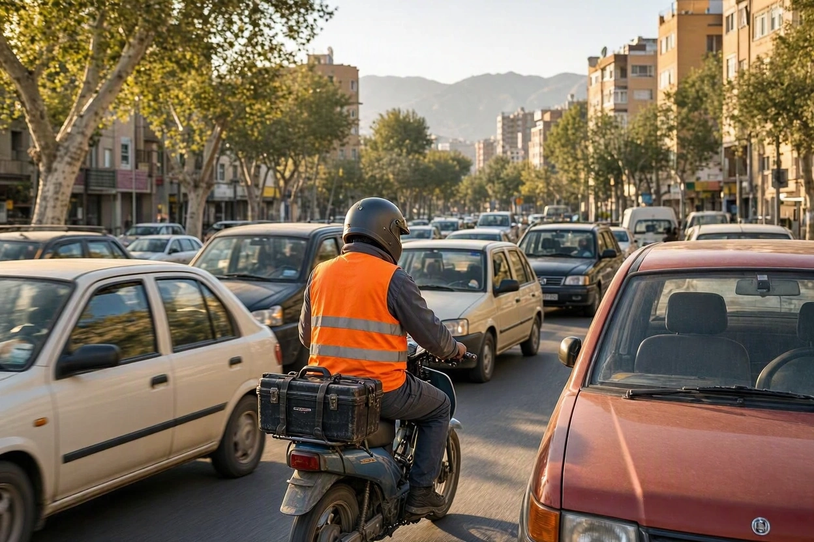
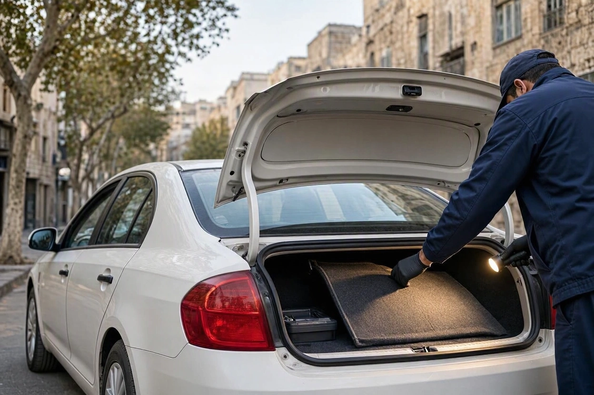
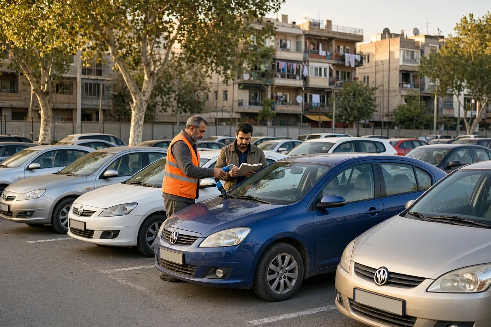

هزینه کارشناسی رنگ خودرو در تهران به چه عواملی بستگی دارد؟
برای یک ۲۰۶ در تهرانپارس و یک شاسیبلند وارداتی در سعادتآباد، از دو مجموعهی کارشناسی قیمت گرفتهاید. هر دو فقط «کارشناسی رنگ» است، اما عددها چند برابر با هم فرق دارند. مجموعهی سوم هم گفته «بستگی دارد». این «بستگی دارد» دقیقاً به چه چیزی بستگی دارد؟
هزینه کارشناسی رنگ خودرو در تهران یک عدد ثابت نیست؛ از چند عامل مشخص ساخته میشود که بعضیهایشان مخصوص همین شهر است. در این راهنمای کارماچک هر عامل را جدا توضیح میدهیم، میگوییم کارشناسی رنگ ارزان معمولاً چه چیزی را جا میاندازد و نشان میدهیم چطور میشود هزینه را منطقی کم کرد بدون اینکه دقت قربانی شود.
هزینه کارشناسی رنگ خودرو در تهران به شش عامل بستگی دارد: کلاس و ارزش خودرو، تعداد و جنس قطعات بدنه، دامنهی بررسی، فاصله و ساعت اعزام کارشناس، ابزار و نوع گزارش، و تعداد خودروها در یک نوبت. بر اساس نرخهای اعلامی بازار تهران در مهر ۱۴۰۵، کارشناسی رنگ و بدنه معمولاً حدود ۱ تا ۳ میلیون تومان بوده است.
خلاصه در یک دقیقه
- برای کارشناسی رنگ نرخ مصوب و الزامآور وجود ندارد؛ هر مجموعه نرخ خودش را اعلام میکند.
- «کارشناسی رنگ» در بازار تهران گاهی فقط اندازهگیری ضخامت است و گاهی شامل شاسی، ستونها و شیشهها هم میشود. اول بپرسید دقیقاً چه چیزی بررسی میشود.
- در تهران، فاصله، ساعت ترافیک، شب و تعطیلی روی هزینهی اعزام اثر دارند.
- خودروهای وارداتی با قطعات آلومینیومی یا تعداد قطعهی بیشتر، زمان و ابزار بیشتری میخواهند.
- ارزانترین کارشناسی رنگ اگر شاسی را نبیند، ممکن است گرانترین اشتباه معامله را رقم بزند.
هزینه کارشناسی رنگ خودرو در تهران حدودا چقدر است؟
برای کارشناسی رنگ و بدنه پیش از خرید و فروش، نه اتحادیهای و نه سازمانی نرخ مصوب و الزامآور اعلام نکرده است. عددی که میپردازید نرخ خود مجموعهی کارشناسی است. بر اساس نرخهای اعلامی سرویسهای فعال تهران در مهر ۱۴۰۵، کارشناسی رنگ و بدنه معمولاً حدود ۱ تا ۳ میلیون تومان بوده و کارشناسی در محل هم معمولاً هزینهی اعزام جداگانهای دارد.
جدول کامل نرخها، از کارشناسی رنگ تا کارشناسی کامل فنی و خودروهای وارداتی، با تاریخ دقیق در مطلب قیمت کارشناسی خودرو ۱۴۰۵ آمده است. این مقاله روی سؤال دیگری تمرکز دارد: چرا عدد کارشناسی رنگ برای دو خودرو یا در دو محلهی تهران اینقدر فرق میکند؟
۶ عاملی که هزینه کارشناسی رنگ را می سازند
این جدول عوامل اصلی را با اثرشان روی هزینه و سؤالی که باید بپرسید، کنار هم گذاشته است:
| عامل | اثر بر هزینه | چه بپرسید |
|---|---|---|
| کلاس و ارزش خودرو | خودروی گرانتر، مسئولیت گزارش بیشتر و معمولاً نرخ بالاتر | «برای این مدل و سال دقیقاً چقدر است؟» |
| تعداد و جنس قطعات | شاسیبلند و خودروی دارای قطعات آلومینیومی زمان و ابزار بیشتری میخواهد | «ضخامتسنج شما روی آلومینیوم هم کار میکند؟» |
| دامنهی بررسی | فقط رنگ ارزانتر از رنگ همراه شاسی، ستونها و شیشههاست | «شاسی و ستونها هم بررسی میشوند؟» |
| فاصله و ساعت اعزام | در محل، شب، جمعه یا فوری معمولاً هزینهی اضافه دارد | «هزینهی اعزام به این آدرس و این ساعت جداست؟» |
| ابزار و نوع گزارش | گزارش عدد به عدد با عکس و نقشهی بدنه، کار بیشتری از گزارش شفاهی است | «گزارش کتبی با عدد هر قطعه میدهید؟» |
| تعداد خودرو در یک نوبت | چند خودرو در یک محل، هزینهی اعزام را تقسیم میکند | «برای دو یا سه خودرو در یک نمایشگاه نرخ جدا دارید؟» |
کلاس خودرو و تعداد قطعه ها
کارشناسی رنگ یعنی اندازهگیری ضخامت روی تکتک قطعات بدنه و مقایسهی آنها با هم. یک هاچبک کوچک قطعات کمتری از یک شاسیبلند هفتنفره دارد. وقتی کارشناس روی هر قطعه چند نقطه را میسنجد، همین تفاوت تعداد، زمان کار را بهطور محسوسی تغییر میدهد.
جنس بدنه هم مهم است. ضخامتسنجهای تکحالته فقط روی ورق فولادی کار میکنند. برای کاپوت، درب یا گلگیر آلومینیومی بعضی خودروهای وارداتی، دستگاه دوحالتهی Fe و NFe لازم است. سازوکار این دستگاه و محدودیتهایش را در راهنمای کارشناسی رنگ و ضخامتسنج توضیح دادهایم.

دامنه بررسی؛ «کارشناسی رنگ» دقیقا یعنی چه؟
در بازار تهران، اسم «کارشناسی رنگ» برای خدمات کاملاً متفاوتی به کار میرود. برای بعضی مجموعهها یعنی فقط اندازهگیری ضخامت قطعات بیرونی. برای بعضی دیگر یعنی رنگ و بدنه همراه بررسی ستونها، سینی جلو، کف صندوق، گلگیرهای داخلی و اصالت شیشهها. دو قیمتی که برای «کارشناسی رنگ» گرفتهاید، شاید اصلاً دو خدمت یکسان نباشند.
عوامل مخصوص تهران؛ فاصله، ترافیک و ساعت
تهران شهری است که یک مسیر دهکیلومتری در ساعت اوج ترافیک ممکن است بیشتر از یک کارشناسی کامل وقت بگیرد. همین واقعیت روی هزینهی کارشناسی رنگ در محل اثر میگذارد:
- فاصله و جهت شهر: اعزام از یک سر شهر به سر دیگر، مثلاً از شرق به غرب تهران، زمان رفتوآمد کارشناس را بالا میبرد. مجموعهای که در منطقهی شما فعال است، معمولاً سریعتر و منطقیتر میرسد.
- ساعت ترافیک: بازدید در ساعتهای اوج رفتوآمد، هم دیرتر شروع میشود و هم ممکن است گرانتر هماهنگ شود.
- شب، جمعه و فوری: بعضی مجموعهها برای این زمانها هزینهی اضافه دارند. شب علاوه بر هزینه، بررسی چشمی رنگ را هم سختتر میکند.
- نمایشگاه و بورس خودرو: وقتی چند گزینه را در یک نمایشگاه یا بورس خودرو میبینید، کارشناسی چند خودرو در یک نوبت، هزینهی اعزام را بین آنها تقسیم میکند.

کارشناس رنگ و بدنه را به محل خودرو بیاورید
مدل خودرو، آدرس و ساعت را ثبت کنید تا هزینه با شرایط واقعی همان خودرو مشخص شود.
ثبت درخواست کارشناسی خودرو در محلکارشناسی رنگ ارزان چه چیزی را جا می اندازد؟
تفاوت قیمت معمولاً از جایی میآید که در لحظهی بازدید دیده نمیشود. این جدول نشان میدهد یک کارشناسی رنگ حداقلی با یک کارشناسی رنگ و بدنهی کامل چه فرقی دارد:
| بخش | کارشناسی رنگ حداقلی | کارشناسی رنگ و بدنه کامل |
|---|---|---|
| تعداد نقطهی اندازهگیری | یک نقطه روی هر قطعه | چند نقطه روی هر قطعه، از جمله لبهها |
| ستونها و شاسی | معمولاً بررسی نمیشود | ستونها، سینی جلو، کف صندوق و گلگیرهای داخلی |
| قطعهی تعویضی | فقط اگر رنگ خورده باشد | بررسی پیچها، درزها و آببندیها |
| سپر و قطعات پلاستیکی | اغلب نادیده | بررسی چشمی زیر نور مناسب |
| شیشهها | بررسی نمیشود | تطبیق کد و تاریخ شیشهها با هم |
| گزارش | شفاهی یا یک خطی | کتبی با عدد هر قطعه و عکس |
راستش را بخواهید، بزرگترین ریسک کارشناسی رنگ حداقلی، ندیدن شاسی است. رنگ یک گلگیر معمولاً با تعمیر و تخفیف قابل جبران است؛ ضربهی ستون یا سینی جلو روی ایمنی، ارزش و فروش بعدی خودرو اثری میگذارد که با هیچ تخفیف کوچکی جبران نمیشود. برای اینکه بدانید یافتههای رنگ و بدنه چقدر روی قیمت خودرو اثر دارند، از قیمتگذاری خودرو کمک بگیرید.

چطور هزینه را کم کنیم بدون کم شدن دقت؟
کم کردن هزینه با حذف بخشهای مهم، صرفهجویی نیست. این راهها هزینه را منطقیتر میکنند بدون اینکه چیزی از دقت کم شود:
- یک بار، کامل:اگر قصد خرید جدی دارید، از اول کارشناسی رنگ و بدنهی کامل بگیرید. کارشناسی حداقلی که بعداً به بررسی دوبارهی شاسی برسد، دو بار هزینهی اعزام دارد.
- چند خودرو در یک نوبت:اگر بین چند گزینه در یک نمایشگاه یا بورس ماندهاید، همه را در یک نوبت کارشناسی کنید.
- روز روشن و خارج از ساعت اوج:هم احتمال هزینهی اضافهی شب و فوری کمتر است، هم بررسی چشمی رنگ دقیقتر.
- غربالگری قبل از کارشناسی:با چند سؤال تلفنی و نگاه به عکسها، خودروهای آشکارا مشکلدار را پیش از صرف هزینه حذف کنید.
- هماهنگی کامل با فروشنده:رزرو قبل از تأیید فروشنده، اگر بازدید لغو شود، ممکن است هزینهی اعزام را هدر بدهد.

۷ سؤال قبل از پرداخت هزینه کارشناسی رنگ
این سؤالها را پیش از پرداخت بپرسید تا دو قیمت را واقعاً با هم مقایسه کنید:
- قیمت دقیق برای همین مدل، سال و تیپ چقدر است؟
- هزینهی اعزام به این آدرس و در این ساعت جداست یا داخل قیمت است؟
- شاسی، ستونها، سینی جلو و کف صندوق هم بررسی میشوند؟
- اصالت شیشهها و قطعات تعویضی بررسی میشود؟
- ضخامتسنج روی قطعات آلومینیومی هم کار میکند؟
- گزارش کتبی با عدد هر قطعه و عکس تحویل میدهید؟
- اگر بازدید به دلیل فروشنده لغو شود، هزینه چه میشود؟
جمع بندی: هزینه کارشناسی رنگ خودرو در تهران را با دامنه بررسی بسنجید
هزینه کارشناسی رنگ خودرو در تهران از شش عامل ساخته میشود: کلاس خودرو، تعداد و جنس قطعات، دامنهی بررسی، فاصله و ساعت اعزام، ابزار و نوع گزارش، و تعداد خودروها در یک نوبت. دو قیمت را فقط وقتی میشود مقایسه کرد که دامنهی بررسیشان یکی باشد.
ارزانترین گزینه وقتی شاسی و ستونها را نبیند، صرفهجویی نیست. پیش از پرداخت، هفت سؤال بالا را بپرسید و کارشناسی خودرو در محل را برای روز روشن و با اطلاعات کامل خودرو هماهنگ کنید.
هزینه دقیق را با مدل و آدرس خودرو بگیرید
مدل، سال و آدرس خودرو را ثبت کنید. کارشناس کارماچک رنگ، بدنه و شاسی را در همان محل بررسی میکند و گزارش کتبی تحویل میدهد.
رزرو کارشناسی خودرو در محلسؤالات متداول
هزینه کارشناسی رنگ خودرو در تهران چقدر است؟
نرخ ثابت و مصوبی وجود ندارد. بر اساس نرخهای اعلامی سرویسهای تهران در مهر ۱۴۰۵، کارشناسی رنگ و بدنه معمولاً حدود ۱ تا ۳ میلیون تومان بوده و کارشناسی در محل معمولاً هزینهی اعزام جداگانه دارد. عدد دقیق به مدل خودرو، دامنهی بررسی و آدرس بستگی دارد.
چرا کارشناسی رنگ خودروی خارجی گرانتر است؟
خودروهای وارداتی معمولاً ارزش بالاتری دارند و مسئولیت گزارش بیشتر است. بعضی از آنها قطعات آلومینیومی دارند که به ضخامتسنج دوحالته نیاز دارد، و شاسیبلندها قطعات بیشتری برای اندازهگیری دارند. همهی اینها زمان و ابزار بیشتری میخواهد.
هزینه کارشناسی رنگ را خریدار میدهد یا فروشنده؟
در عرف بازار ایران، معمولاً خریدار هزینهی کارشناسی را میپردازد، چون کارشناسی به نفع تصمیم خرید اوست. با این حال، دو طرف میتوانند توافق دیگری داشته باشند. مهم این است که کارشناس را خریدار انتخاب کند تا گزارش بیطرف بماند.
کارشناسی رنگ بدون بررسی شاسی ارزش دارد؟
برای فهمیدن وضعیت رنگ قطعات بیرونی مفید است، اما برای تصمیم خرید کافی نیست. آسیب ستون، سینی جلو یا کف صندوق بیشترین اثر را روی ایمنی و ارزش خودرو دارد. اگر قصد خرید جدی دارید، کارشناسی رنگ و بدنه همراه بررسی شاسی را انتخاب کنید.
کارشناسی رنگ در شب هزینه بیشتری دارد؟
بعضی مجموعهها برای شب، جمعه یا درخواست فوری هزینهی اضافه میگیرند. علاوه بر هزینه، بررسی چشمی رنگ زیر نور کوچه سختتر است. اگر ممکن است بازدید را برای روز روشن بگذارید یا پارکینگ سرپوشیده با نور سفید یکنواخت را انتخاب کنید.
آیا کارشناسی چند خودرو در یک روز ارزانتر است؟
وقتی چند خودرو در یک محل، مثلاً یک نمایشگاه یا بورس خودرو، بررسی میشوند، هزینهی اعزام تکرار نمیشود. بعضی مجموعهها برای این حالت نرخ جداگانه دارند. پیش از رزرو، تعداد خودروها و محل دقیق آنها را اعلام کنید و قیمت را بپرسید.